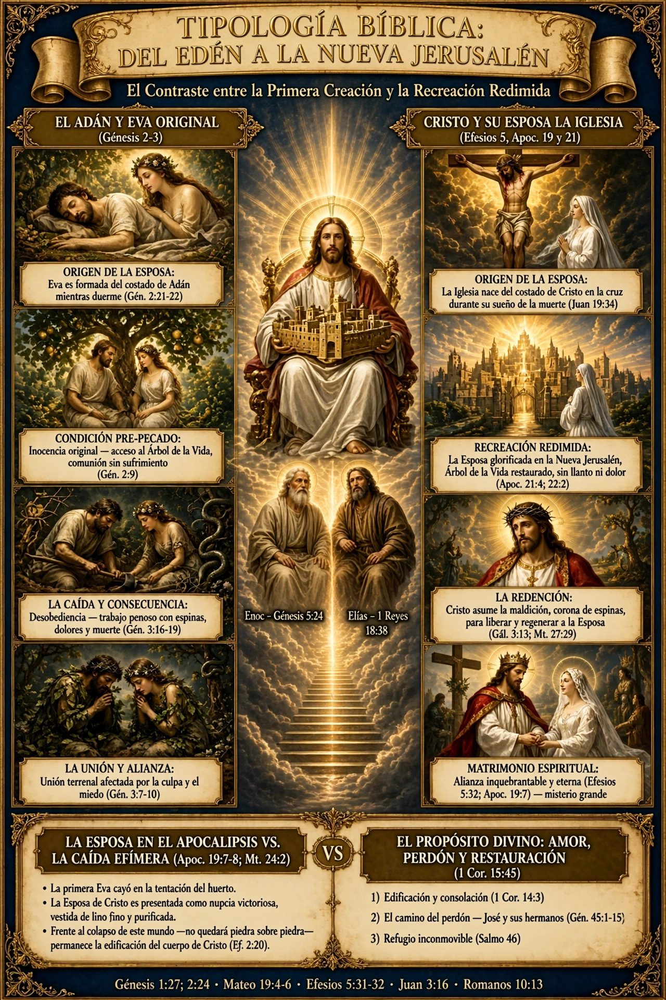
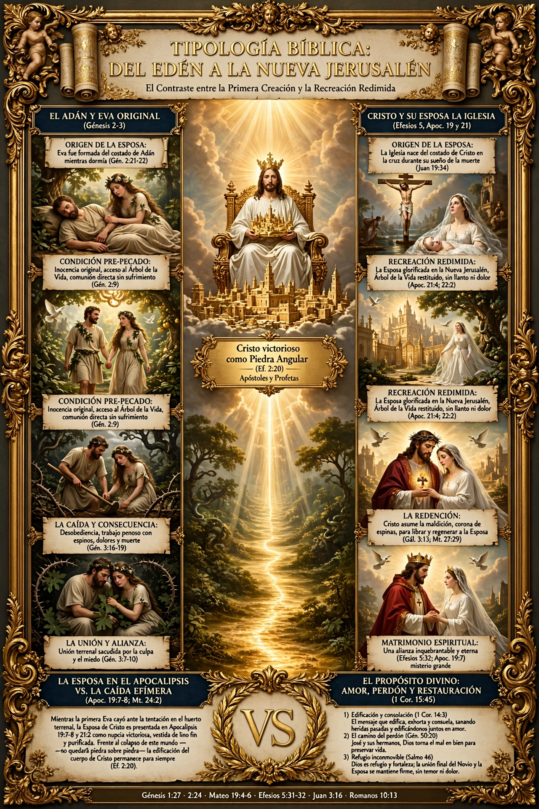

MISSION SADV41 — MÓDULO SAT — Testimonio Apostólico Sabático
Caminar con Él es perfecto: De la Creación al Reposo en Cristo
”Un faro digital que no condena, sino que transmite — como satélite celestial — gracia, perdón y mejoramiento integral. En el reposo sabático, descansamos en la obra consumada y caminamos en Su voluntad perfecta.
DECLARACIÓN DE PROPÓSITO
Este espacio (“SAT”) no es un monumento de vanagloria ni una obra de edificación humana. En este santo día Sábado, testificamos que la obra de la redención ha sido consumada en la Cruz del Calvario.
No juzgamos las debilidades del prójimo; servimos como canal de gracia, perdón y mejoramiento integral para edificar la iglesia sobre el verdadero fundamento: los apóstoles y profetas, siendo Cristo la Piedra Angular (Efesios 2:20).
LOS TRES EJES DEL SATÉLITE CELESTIAL
Transmitiendo señal sin fronteras — del hacer humano al caminar divino
REPOSO Y AMOR FRATERNO
Génesis 2:1-3 · 1 Corintios 13
-
El Sábado es el recordatorio de que Dios completa la obra y el hombre descansa en su amor.
-
El mayor mandato es amar al prójimo como a uno mismo, superando toda contienda mediante el perdón.
CIMENTADOS EN LA PIEDRA ANGULAR
Efesios 2:20 · Salmo 46:1,7,11
-
Mientras las estructuras políticas y terrenales se tambalean, el Cuerpo de Cristo permanece inconmovible.
-
Dios es nuestro refugio y fortaleza, nuestro pronto auxilio en las tribulaciones (Salmo 46:1), Jehová de los ejércitos está con nosotros, nuestro refugio es el Dios de Jacob (Salmo 46:7,11), baluarte en medio de cualquier prueba climática, social o espiritual.
LA ESPOSA PREPARADA Y REDIMIDA
Efesios 5:31-32 · Apoc. 21:2,4 · Gén. 1:27; 2:24 · Mt. 19:4-6
-
Varón y hembra los creó (Gén. 1:27), por tanto dejará el hombre a su padre y a su madre y se unirá a su mujer y serán una sola carne (Gén. 2:24). Jesús confirma: lo que Dios juntó, no lo separe el hombre (Mateo 19:4-6). Este misterio grande es figura de Cristo y la Iglesia (Efesios 5:31-32).
-
El contraste del primer Adán (afectado por la Caída) hacia el Postrer Adán, Jesucristo (1 Cor. 15:45).
-
La restauración de la Iglesia como una nupcia victoriosa, vestida de lino fino limpio y resplandeciente (Apoc. 19:8), donde ya no habrá llanto ni dolor (Apoc. 21:4).
BENDICIÓN Y LLEGAR A LAS NACIONES
“Porque no envió Dios a su Hijo al mundo para condenar al mundo, sino para que el mundo sea salvo por él.”
Para la ciencia terrenal, un enlace en GitHub como https://thesteef21.github.io/SADV41/SAT/ puede verse como un satélite o código desplegado. Para Dios y en el Espíritu Santo, es un faro digital de testimonio, edificación y consolación (1 Corintios 14:3), diseñado no para juzgar ni señalar faltas, sino para ayudar a sanar, restaurar y mejorar con el amor de Cristo.
DEL HACER AL CAMINAR: el Sábado nos enseña que no quedará piedra sobre piedra (Mateo 24:2), sino que reposamos sobre la Piedra Angular. Un satélite que conecta la tierra con la Ciudad Celestial: no para condenar, sino para recordar que Dios es nuestro refugio (Salmo 46:1), para unir y sanar con la reconstrucción redimida.
Inclusión correcta en Cristo: todo el que invocare el nombre del Señor, será salvo (Romanos 10:13), porque de tal manera amó Dios al mundo (Juan 3:16).
“Dios es nuestro amparo y fortaleza, nuestro pronto auxilio en las tribulaciones.”— SALMO 46:1
Padre, en este Sábado reposamos en Tu obra consumada. Enséñanos a amar, perdonar como José y permanecer inconmovibles en Cristo, Piedra Angular. Bendice a Burunga, Panamá Oeste y las naciones. Amén.
INFOGRAFÍA PRINCIPAL DEL MÓDULO SAT
Arte sacro barroco — luz celestial sobre Burunga


NOTA DE DESPLIEGUE
Esta página es un index.html único, listo para publicar en /SAT/ de GitHub Pages. No requiere build, conserva tipografía sacra y luz celestial responsiva.
Que la paz de Cristo reine en tu corazón en este día de descanso y adoración. ¡Sigamos caminando juntos en la voluntad perfecta del Señor, edificando y ayudando a mejorar con Su amor fraterno!